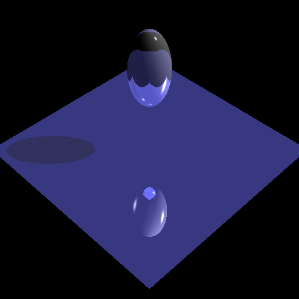

Computer Graphics Assignment2 Writeup
Name: Shimin Pan JHED: span20 Late Day: 0
Compiler: MSVC++ 14.22 Environment: VisualStudio 2019-version 16.2 Platform: Windows10
Fully Implemented:
Total points: 30
- (1) Ray::Camera::getRay (Ray/camera.todo.cpp)
- (2) Ray::ShapeList::intersect (Ray/shapeList.todo.cpp)
- (2) Ray::Sphere::intersect (Ray/sphere.todo.cpp)
- (2) Ray::TriangleList::intersect (Ray/shapeList.todo.cpp) and Ray::Triangle::intersect (Ray/triangle.todo.cpp)
- (1) Ray::Scene::getColor (Ray/scene.todo.cpp)
- (2) To obtain the ambient and diffuse color contributions of the lights at the point of intersection
- (2) To obtain the specular color contribution of the lights at the point of intersection
- (2) To determine if the point of intersection is in shadow from a particular light source
- (1) Ray::Scene::getColor (Ray/scene.todo.cpp)
- (2) Ray::AffineShape::intersect (Ray/shapeList.todo.cpp)
- (1) Ray::Scene::getColor (Ray/scene.todo.cpp)
- (1) Ray::Scene::getColor (Ray/scene.todo.cpp)
- (2) Ray::Scene::getColor (Ray/scene.todo.cpp)
- (2) Ray::Scene::getColor (Ray/scene.todo.cpp)
- Accelerated Ray-Tracing
(3) Accelerate ray intersection tests with hierarchical bounding boxes
(2) Ray::ShapeList::intersect (Ray/shapeList.todo.cpp) Modify this method
- (2) Ray::Triangle::intersect (Ray/triangle.todo.cpp)
Partially Implemented: (have not test yet)
- (1) Ray::Box::intersect and Ray::Box::updateBoundingBox (Ray/box.todo.cpp)
Un-implemented:
- (1) Implement a jittered supersampling scheme to reduce aliasing by casting multiple rays per pixel, randomly jittered about pixel centers, and averaging the radiance samples.
- (1) Generate a 3D scene and save it as a .ray file.
- (1) Treat Ray::PointLights and Ray::SpotLights lights as having a finite 'area' and cast a collection of rays during shadow checking to generate soft shadows.
- (1) Ray::Cylinder::intersect and Ray::Cylinder::updateBoundingBox (Ray/cylinder.todo.cpp)
- (1) Ray::Cone::intersect and Ray::Cone::updateBoundingBox (Ray/cone.todo.cpp)
- (2) Ray::Torus::intersect and Ray::Torus::updateBoundingBox (Ray/torus.todo.cpp)
- (3) Constructive solid geometry
- (2) Implement procedural texture mapping with Perlin noise functions to create 3-D solid wood, marble, etc.
- (1) Implement bump mapping for either or both texturing schemes.
- (1) Simulate the behavior of a real camera lens by implementing the procedure in this SIGGRAPH paper.
- (2) Accelerate ray intersections with an octree or BSP spatial data structure.
- (?) Impress us with something we hadn't considered...
Some Special Notes:
(1) In BoundingBox::intersect & Ray::Box::intersect, I employ the algorithm described in "An Efficient and Robust Ray–Box Intersection Algorithm", Amy Williams, et al. University of Utah.
(2) For 'dog.ray' and 'dragon.ray', there might be a slight special case I haven't considered, because part of the model goes dark.
(3) It's truly a brutal assignment. So much debugging work.
(4) Command/Parameter: "Assignment2 --in test.ray --out test.bmp --width 500 --height 500 --rLimit 5 --cutOff 0.0001" ; if use another .ray file, just change the input file name (e.g. --in dragon.ray)
-
Diffusive & Specular & Shadow
|
|
|
diffusive |
specular |
Shadow |
-
Texture
|
|
|
 |
Affine |
Reflect |
Refract |
Transparent |
-
Affine & Reflect & Refract & Transparent
-
PointLight & SpotLight
-
Bunny & Buddha & Big & David
-
Flawed Dog & Dragon